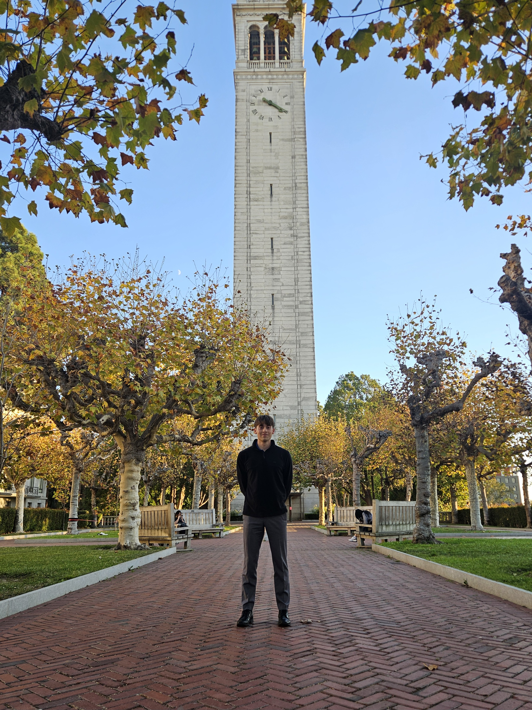

Hello, I'm
Master's student at the University of Wisconsin–Madison. Previously researched FPGA applications for quantum information processing at the University of Kansas.
About me
Born and raised in St. Louis, I attended Metro Academic and Classical High School, earning both an IB and a high school diploma. I completed my undergraduate degree in computer engineering at the University of Kansas, and I'm now a Master's student at the University of Wisconsin–Madison.
As an undergrad I spent over a year in the KU Advanced, Reconfigurable, and Quantum Computing (KUARQ) Research Group under Dr. Esam El-Araby, working on FPGA applications for quantum information processing.
Outside the lab I enjoy soccer, running, reading, going on walks with my girlfriend Iris, and exploring Kansas City. Feel free to reach out if you'd like to connect!
Academia
Currently pursuing my Master's degree at UW–Madison, where my research expands into new directions in computing and engineering. Details to come as the program progresses.
Worked under Dr. Esam El-Araby in the KU Advanced, Reconfigurable, and Quantum Computing (KUARQ) Research Group. Focused on FPGA architectures for quantum information processing — bridging reconfigurable hardware with near-term quantum algorithms.
CV
Personal